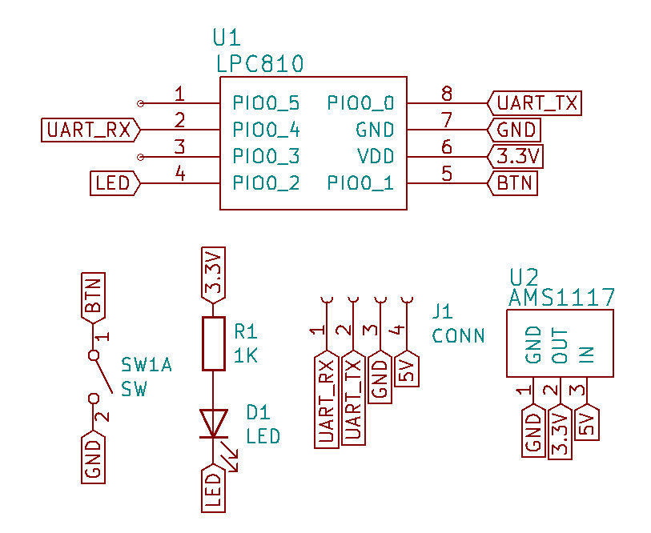
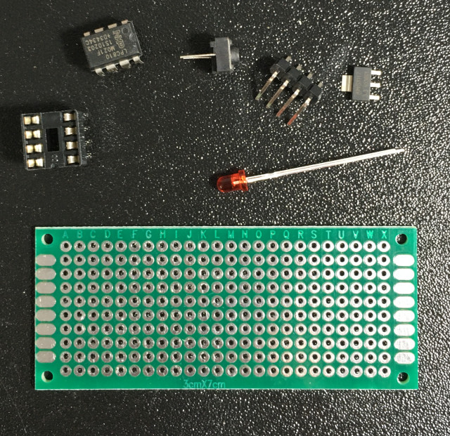
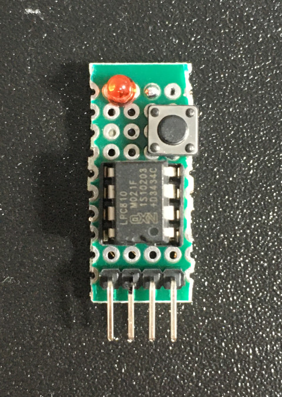
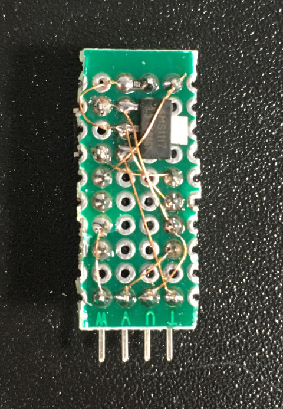
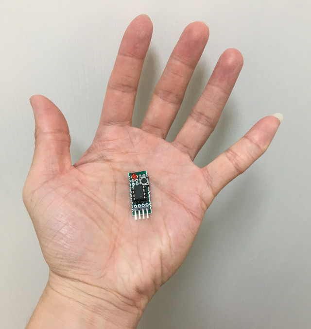

Steward
分享是一種喜悅、更是一種幸福
微處理器 - NXP LPC810 - 開發板
參考資訊：
https://www-users.cs.york.ac.uk/~pcc/Circuits/LPC800/data/lpc810.html
https://github.com/microbuilder/LPC810_CodeBase/blob/master/doc/LPC81x%20User%20Manual.pdf
LPC810是一款DIP封裝的ARM晶片，腳位只有8根，在現今技術快速演變中，還能夠見到這樣的ARM晶片封裝，實屬不易，為此，司徒基於好奇，特地焊接一片開發板來玩玩，藉此看看這一款迷你晶片的特別之處，此外，司徒也相當喜愛NXP晶片，因為NXP多數晶片都可以透過UART界面下載燒錄程式，只要透過腳位設置(接到GND)，就可以進入ISP燒錄模式，相當方便使用
電路圖

材料

焊接


真是迷你
